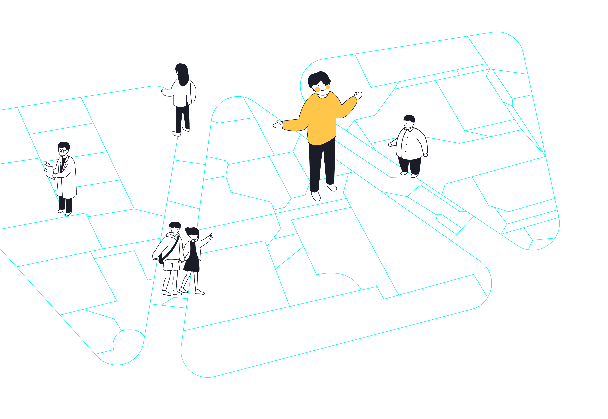
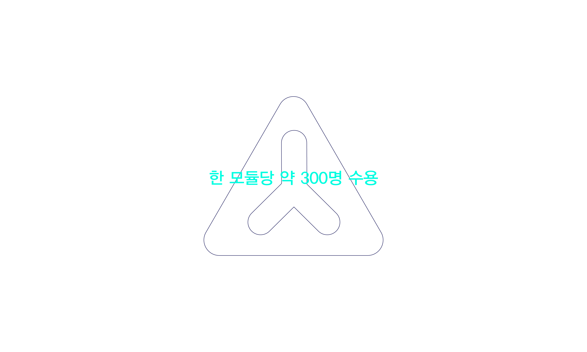
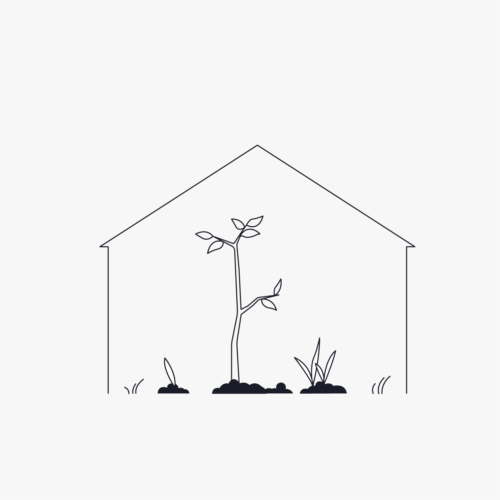
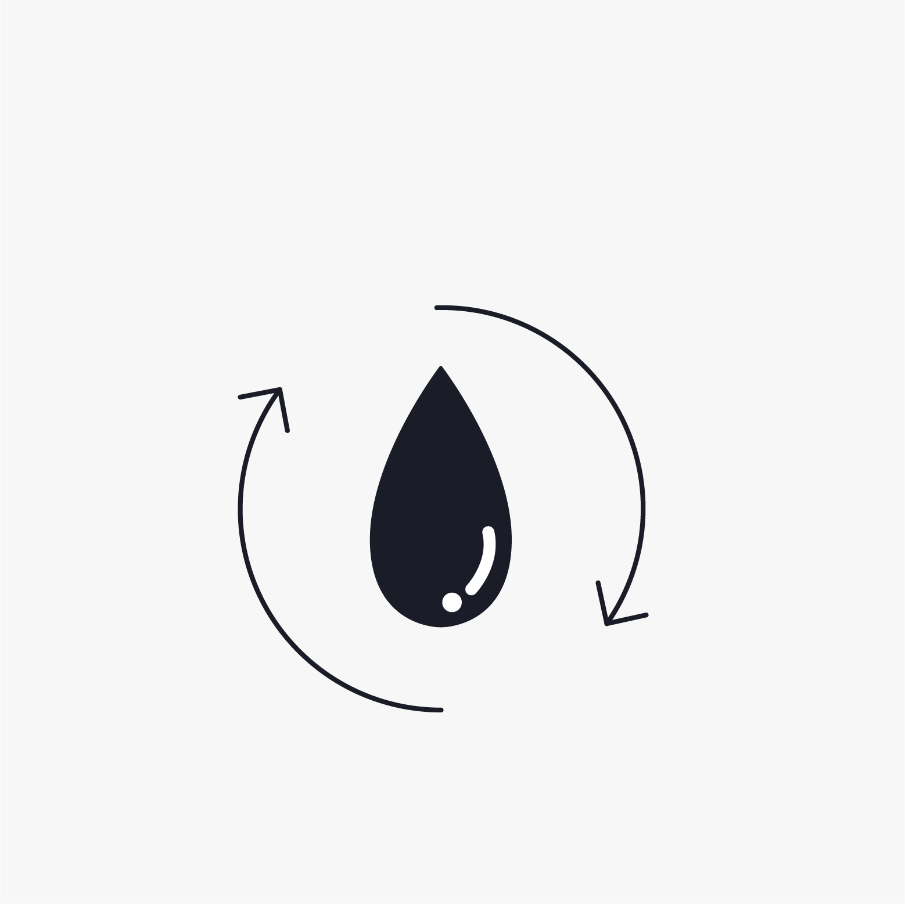
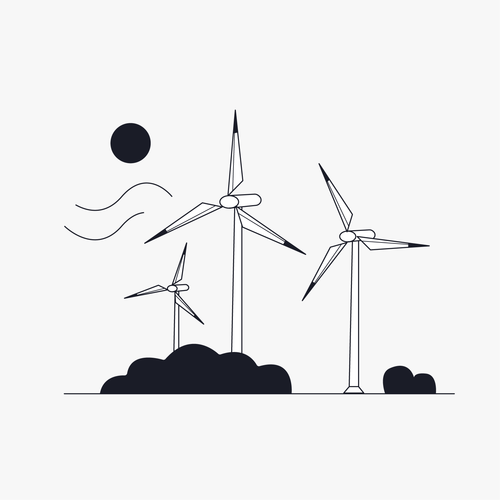

Oceanix Busan
Home
Technology
Explore

Technology of
Oceanix Busan!
오셔닉스 부산은 새로운 산업을 개척하는 해양도시입니다!
오셔닉스에는 얼마나 많은 사람이 살아갈 수 있을까요?

최대 1만명 거주 가능
오셔닉스 부산을 지속 가능한 도시로 만들어 준 것들은 무엇일까요?
이미지를 눌러 확인해보세요!



오셔닉스 부산의 모듈은 어떤 기능을 할까요?